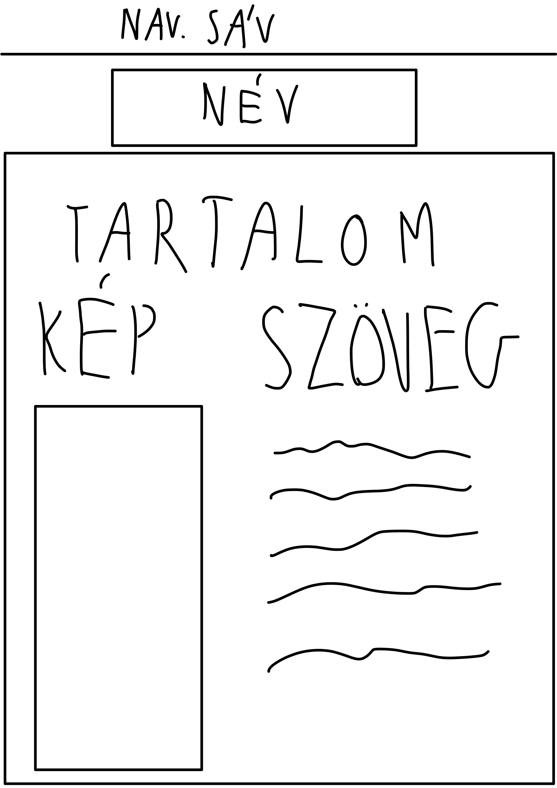

Az oldal terve
A weboldal készítése nem éppen zajlott számomra zökkenőmentesen, a kezdeti nehézségeken a videók és a w3schools anyagai segítettek át.
Eleinte nehézséget okozott az előre elképzelt helyükre rakni a tartalmakat, de sok szenvedés és próbálkozás után egy számomra kielégítő oldalt sikerült elkészítenem.
A készítés menete a weboldal kinézetének megtervezésével kezdődött ami bal oldalon látható, ezután következett a háttér és a betűtípus kiválasztása, majd a tartalmak feltöltése és elhelyezése.
Felhasznált anyagok:
w3schools.com
Google:)
Google fonts
Youtube(a felrajott és egyéb videók)